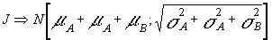
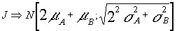

Ejemplo: Piezas
[1]
Una pieza J está compuesta por 2 elementos de A y uno de B, que se unen sin solapamiento. La longitud de las piezas A sigue una N [4;1] cm., mientras que las B también son normales N [12;2]cm. Se quiere conocer la probabilidad de crear una pieza J de longitud inferior a 20,2 cm.
Datos:- Longitud de J = longitud de A+ longitud de A + longitud de B
- y no Longitud de J = 2veces longitud de A + longitud de B
Dado que si una pieza A es de una determinada longitud aleatoria la otra pieza A no tiene por qué ser de la misma longitud (aunque proceda o se distribuya con la misma distribución de probabilidad). A parte de esto, el hecho de utilizar suma o producto no da el mismo resultado al aplicar el teorema fundamental de las distribuciones normales, dado que la suma o producto se realizan dentro de una raíz. Por ello, en este caso, hemos de tomar la primera expresión, así:
L(J)=L(A)+L(A)+L(B) simplificando J=A+A+B dado que:A -> N [ 4; 1] y B -> N[12; 2] y son independientes:
y en aplicación del teorema fundamental de las distribuciones normales, tendremos que:

Luego J -> N[20 ; 2.449]
y que evidentemente no resultaría lo mismo si hubiésemos hecho, como antes dijimos:

cuyo resultado sería: J -> N [20 ; 2.82]
Conociendo que la verdadera longitud de la pieza es J -> N [20 ; 2.449]
Se nos pregunta por:

siendo el resultado según tabla de la N[0;1] ; 0.532
Recuperado de:
Uv.es. (2017). t fundamental. [online] Available at: https://www.uv.es/ceaces/tex1t/1%20normal/tfundamental.htm [Accessed 3 Mar. 2020].